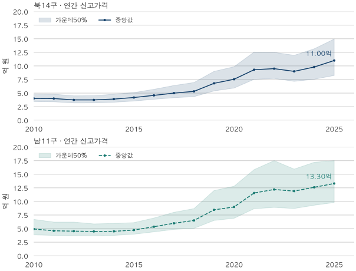
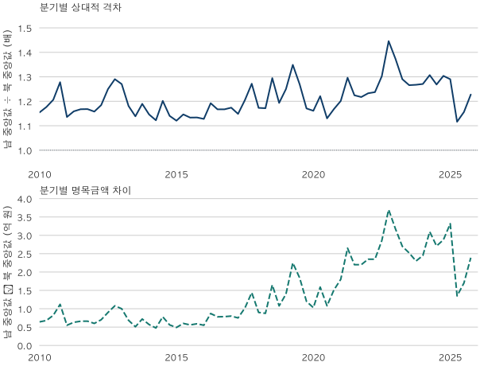

수도권 가격 지도 · 2025년까지의 남북 격차
2010~2025년 한강 남북84㎡ 가격 격차는 커졌을까?
2010~2025년 서울 북14구·남11구의84㎡형 신고가격을 비교합니다. 중앙값 비율은 소폭 줄었지만 명목금액 차이는 커졌습니다. 전체64분기와16연간의 분포·건수, 거래 구성과 정제 한계를 확인하세요.
분석 기간 · 2010~2025년 전용84㎡ 이상~85㎡ 미만 신고자료 | 보유 자료 스냅샷 생성 · 2026-10-04
한강 남쪽과 북쪽의 아파트 가격 격차는 벌어졌을까요? 2010~2025년 전용 84㎡형 신고가격을 보면, 연간 중앙값의 남/북 비율은1.225배에서1.209배로 조금 낮아졌지만 금액 차이는9,050만 원에서2억 3,000만 원으로 커졌습니다. ‘격차’에 비율을 쓰는지 금액을 쓰는지에 따라 답이 달라집니다.
강남3구와 강북을 비교한 것인가요?
아닙니다. 여기서 남쪽은 서초·강남·송파뿐 아니라 양천·강서·구로·금천·영등포·동작·관악·강동을 포함한11개 구입니다. 북쪽은 종로·중·용산·성동·광진·동대문·중랑·성북·강북·도봉·노원·은평·서대문·마포의14개 구입니다. 강남구나 강북구 하나의 가격도 아닙니다.
이 구분은 한국부동산원의 강남권역·강북권역에 포함되는 구 목록과 같습니다. 좌표로 한강과의 거리를 재거나 한강변 단지만 뽑은 분석은 아닙니다. 한강 조망 프리미엄을 설명하는 자료로도 쓸 수 없습니다.
면적은 전용 84㎡ 이상~85㎡ 미만으로 맞췄습니다. 공급면적이나 전용85㎡를 포함하는 범위와 구분합니다. 기간은2010년1월부터2025년12월까지이며, 이 글은2026년 가격을 평가하지 않습니다. 연간·분기별로 각 묶음의 신고 계약을 모두 모아 중앙값을 계산했습니다.
비율이 줄었는데 금액 차이는 왜 커졌나요?
두 지역의 가격 수준이 함께 높아지면 상대적 격차가 작아져도 금액 차이가 커질 수 있습니다. 2010년 북14구 중앙값은4억 200만 원, 남11구는4억 9,250만 원이었습니다. 2025년에는 각각11억 원과13억 3,000만 원입니다.
남/북 비율=남 중앙값÷북 중앙값, 금액 차이=남 중앙값−북 중앙값입니다.2010년의9,050만 원은 북 중앙값의 약22.5%인 반면,2025년의2억 3,000만 원은 약20.9%입니다. 비율만 보면 상대적 차이가 조금 작아졌지만 두 대표가격 사이의 명목금액 간격은 넓어진 셈입니다. 소득·대출·거래비용을 반영한 실제 갈아타기 부담을 계산한 것은 아닙니다.

| 기간 | 북14 중앙값 | 남11 중앙값 | 남÷북 | 남−북 |
|---|---|---|---|---|
| 2010 | 40,200 | 49,250 | 1.225배 | 9,050 |
| 2011 | 40,000 | 46,000 | 1.150배 | 6,000 |
| 2012 | 37,500 | 45,300 | 1.208배 | 7,800 |
| 2013 | 37,500 | 44,800 | 1.195배 | 7,300 |
| 2014 | 39,000 | 45,000 | 1.154배 | 6,000 |
| 2015 | 41,900 | 47,300 | 1.129배 | 5,400 |
| 2016 | 45,850 | 53,500 | 1.167배 | 7,650 |
| 2017 | 50,000 | 59,800 | 1.196배 | 9,800 |
| 2018 | 53,200 | 65,000 | 1.222배 | 11,800 |
| 2019 | 68,000 | 84,500 | 1.243배 | 16,500 |
| 2020 | 75,500 | 89,825 | 1.190배 | 14,325 |
| 2021 | 93,000 | 115,500 | 1.242배 | 22,500 |
| 2022 | 95,000 | 122,000 | 1.284배 | 27,000 |
| 2023 | 90,000 | 119,000 | 1.322배 | 29,000 |
| 2024 | 98,000 | 126,000 | 1.286배 | 28,000 |
| 2025 | 110,000 | 133,000 | 1.209배 | 23,000 |
그렇다고2010년부터 비율이 꾸준히 줄었다는 뜻은 아닙니다. 연간 비율은2015년1.129배에서2023년1.322배로 높아졌다가2025년1.209배로 낮아졌습니다. 2023년과2025년을 비교하면 금액 차이도2억 9,000만 원에서2억 3,000만 원으로 줄었습니다. 시작연도와 끝연도를 함께 적어야 어느 방향의 변화인지 확인할 수 있습니다.
같은4분기끼리 비교해도 결과가 같나요?
선택한 두 끝점에서는 같습니다.2010년4분기 북 중앙값은4억 300만 원, 남은5억 1,500만 원으로 비율1.278배·차이1억 1,200만 원입니다.2025년4분기는 각각10억 5,100만 원·12억 9,000만 원으로 비율1.227배·차이2억 3,900만 원입니다.
이 비교는 연간 결과가 서로 다른 계절의 끝점을 비교해서만 생긴 것은 아니라는 확인입니다. 계절효과를 추정하거나 거래 구성 차이를 제거한 검정은 아닙니다. 아래64분기를 모두 보면 짧은 구간의 움직임이 연간 끝점 비교와 다를 수 있습니다.

남쪽 집이 북쪽 집보다 그만큼 더 올랐다는 뜻인가요?
그렇게 말할 수 없습니다. 같은84㎡형이어도 기간마다 거래된 구·단지·연식·층이 다릅니다. 각 계약에 한 표를 주므로 거래가 많은 구가 해당 묶음의 분포에 더 많이 들어갑니다.25개 구를 같은 비중으로 맞춘 비교나 같은 집을 추적한 가격지수가 아닙니다.
남11구에는 가격대가 높은 강남3구와 다른8개 구가 함께 있습니다. 이번 표는 강남3구가 차이의 얼마를 설명했는지 분리하지 않았습니다. 따라서 북쪽의 개별 단지가 남쪽의 모든 단지보다 싸다거나, 남쪽으로 옮기면 표의 차이만큼 자금이 필요하다는 결론도 나오지 않습니다. 가운데50% 구간이 겹치는 이유와 후보 비교는 같은 면적의 가격 분포를 읽는 글에서 이어 볼 수 있습니다.
또 하나의 한계는 장기 자료의 신고항목입니다. 해제 여부와 거래 유형은 수집 역사 전체에 같은 조건으로 존재하지 않습니다. 이번 비교는 시기별로 제외 규칙이 바뀌지 않도록 유효한 가격·면적과 토지임대 제외를 공통 적용하고, 해제·직거래 표기는 전 기간의 제외 조건으로 사용하지 않았습니다. 최근 정상 중개거래만 남긴 가격 통계와 값이 같다고 볼 수 없습니다. 이 선택과 다른 정제 결과의 의미는 정제 규칙에 따른 가격 차이에서 확인하세요.
내 후보 두 곳에는 어떻게 적용하나요?
- 비교 지역을 적으세요. 남11구·강남3구·강남구는 서로 다른 범위입니다.
- 기간·면적·가격 종류를 맞추세요. 연간 신고가격 중앙값과 오늘의 개별 호가를 직접 비교하지 않습니다.
- 비율과 금액 차이를 함께 계산하세요. 상대적으로 가까워져도 명목 자금 차이는 커질 수 있습니다.
- 실제 후보의 조건을 확인하세요. 같은 단지·전용면적·층·연식·최근 정상 계약으로 좁히고, 보유자금과 금융 조건은 별도로 계산하세요.
자료·정제·전체80기간 표와 검증
원천은 국토교통부 아파트 매매 신고자료입니다. 공개안내와 한국부동산원의 권역 정의를2026년10월10일 확인했습니다. 구 목록만 참고했으며 한국부동산원의 조사 가격지수를 재현한 것은 아닙니다.
자료 마트 생성 시점은2026년10월4일이며 원천에는2026년 자료도 있지만 이 글은 계약기간2010년1월~2025년12월만 사용합니다.2025년 말 당시 공개되어 있던 자료만 모은 빈티지는 아닙니다. 이후의 신고·정정이 과거 값에 반영될 수 있습니다.
단지 식별자·계약일·면적·층·신고금액을 기준으로 중복을 병합한 뒤 현행 단지 마스터의 구에 연결했습니다. 전용 84≤면적<85㎡,양의 유한 가격·면적,토지임대 제외를 적용합니다. 해제와 직거래 표기로 제외하지 않는 장기 공통 규칙입니다. 직거래 자체가 위법하다는 뜻은 아닙니다.
각 기간의 계약금액에서 선형 보간25·50·75분위수를 계산했습니다. 연간 중앙값은 해당 연도 계약을 다시 모은 값이며 분기 중앙값 평균이 아닙니다. 남북 비율·차이는 반올림 전 중앙값으로 계산했고 가격 단위는만원입니다. 두 묶음×80기간의160개 통계를 독립 계산과 대조했으며 공개 집계는 모두203건 이상입니다. 원계약·단지 식별자는 공개하지 않습니다.
초기 검토의2026년 포함 비교는 공개지원 기준을 충족하지 못했습니다. 독자의 요청으로2025년까지를 별도 범위로 정해 검증했으며 이 글의 결과를2026년으로 연장하지 않습니다.59㎡형·구별 평균·강남3구 제외·자체모형 지수는 이번 글의 결론 범위에 포함하지 않았습니다.
연간 건수와 가운데50% 구간
| 기간·지역 | 계약 수 | 25분위 | 중앙값 | 75분위 |
|---|---|---|---|---|
| 2010 · 북14구 | 5,849 | 34,500 | 40,200 | 48,500 |
| 2010 · 남11구 | 6,599 | 38,500 | 49,250 | 67,000 |
| 2011 · 북14구 | 7,475 | 34,000 | 40,000 | 48,000 |
| 2011 · 남11구 | 8,201 | 37,500 | 46,000 | 62,000 |
| 2012 · 북14구 | 5,779 | 31,950 | 37,500 | 45,000 |
| 2012 · 남11구 | 6,154 | 36,800 | 45,300 | 62,000 |
| 2013 · 북14구 | 10,703 | 32,000 | 37,500 | 45,214 |
| 2013 · 남11구 | 11,124 | 36,500 | 44,800 | 58,700 |
| 2014 · 북14구 | 13,574 | 33,200 | 39,000 | 48,000 |
| 2014 · 남11구 | 13,047 | 37,500 | 45,000 | 59,500 |
| 2015 · 북14구 | 18,834 | 35,400 | 41,900 | 51,000 |
| 2015 · 남11구 | 19,378 | 39,700 | 47,300 | 61,000 |
| 2016 · 북14구 | 17,370 | 38,612.5 | 45,850 | 57,000 |
| 2016 · 남11구 | 18,005 | 44,000 | 53,500 | 69,500 |
| 2017 · 북14구 | 15,924 | 41,500 | 50,000 | 64,000 |
| 2017 · 남11구 | 17,265 | 48,500 | 59,800 | 80,000 |
| 2018 · 북14구 | 13,559 | 43,500 | 53,200 | 69,500 |
| 2018 · 남11구 | 11,801 | 50,500 | 65,000 | 86,800 |
| 2019 · 북14구 | 11,317 | 54,000 | 68,000 | 90,000 |
| 2019 · 남11구 | 11,614 | 65,000 | 84,500 | 120,000 |
| 2020 · 북14구 | 12,501 | 59,300 | 75,500 | 98,500 |
| 2020 · 남11구 | 11,804 | 69,000 | 89,825 | 127,970 |
| 2021 · 북14구 | 5,911 | 75,300 | 93,000 | 125,500 |
| 2021 · 남11구 | 5,612 | 86,575 | 115,500 | 158,500 |
| 2022 · 북14구 | 1,365 | 77,000 | 95,000 | 125,000 |
| 2022 · 남11구 | 1,351 | 89,000 | 122,000 | 175,000 |
| 2023 · 북14구 | 4,978 | 71,625 | 90,000 | 119,500 |
| 2023 · 남11구 | 5,639 | 87,000 | 119,000 | 159,500 |
| 2024 · 북14구 | 8,686 | 75,500 | 98,000 | 131,500 |
| 2024 · 남11구 | 9,398 | 93,000 | 126,000 | 172,000 |
| 2025 · 북14구 | 12,483 | 82,450 | 110,000 | 149,500 |
| 2025 · 남11구 | 12,941 | 98,000 | 133,000 | 175,000 |
| 기간 | 북14 중앙값 | 남11 중앙값 | 남÷북 | 남−북 |
|---|---|---|---|---|
| 2010Q1 | 41,575 | 48,000 | 1.155배 | 6,425 |
| 2010Q2 | 38,500 | 45,300 | 1.177배 | 6,800 |
| 2010Q3 | 39,800 | 48,000 | 1.206배 | 8,200 |
| 2010Q4 | 40,300 | 51,500 | 1.278배 | 11,200 |
| 2011Q1 | 40,500 | 46,000 | 1.136배 | 5,500 |
| 2011Q2 | 39,694 | 46,000 | 1.159배 | 6,306 |
| 2011Q3 | 39,400 | 46,000 | 1.168배 | 6,600 |
| 2011Q4 | 39,380 | 46,000 | 1.168배 | 6,620 |
| 2012Q1 | 38,000 | 44,000 | 1.158배 | 6,000 |
| 2012Q2 | 38,000 | 45,000 | 1.184배 | 7,000 |
| 2012Q3 | 36,000 | 45,000 | 1.250배 | 9,000 |
| 2012Q4 | 37,200 | 48,000 | 1.290배 | 10,800 |
| 2013Q1 | 37,000 | 47,000 | 1.270배 | 10,000 |
| 2013Q2 | 37,900 | 44,750 | 1.181배 | 6,850 |
| 2013Q3 | 36,800 | 41,900 | 1.139배 | 5,100 |
| 2013Q4 | 38,000 | 45,200 | 1.189배 | 7,200 |
| 2014Q1 | 39,000 | 44,700 | 1.146배 | 5,700 |
| 2014Q2 | 38,900 | 43,660 | 1.122배 | 4,760 |
| 2014Q3 | 38,700 | 46,500 | 1.202배 | 7,800 |
| 2014Q4 | 39,900 | 45,500 | 1.140배 | 5,600 |
| 2015Q1 | 40,600 | 45,500 | 1.121배 | 4,900 |
| 2015Q2 | 41,000 | 47,000 | 1.146배 | 6,000 |
| 2015Q3 | 42,000 | 47,600 | 1.133배 | 5,600 |
| 2015Q4 | 44,100 | 50,000 | 1.134배 | 5,900 |
| 2016Q1 | 43,000 | 48,500 | 1.128배 | 5,500 |
| 2016Q2 | 45,300 | 54,000 | 1.192배 | 8,700 |
| 2016Q3 | 46,700 | 54,500 | 1.167배 | 7,800 |
| 2016Q4 | 47,000 | 54,850 | 1.167배 | 7,850 |
| 2017Q1 | 46,000 | 54,000 | 1.174배 | 8,000 |
| 2017Q2 | 50,500 | 58,000 | 1.149배 | 7,500 |
| 2017Q3 | 49,800 | 60,000 | 1.205배 | 10,200 |
| 2017Q4 | 53,000 | 67,400 | 1.272배 | 14,400 |
| 2018Q1 | 52,000 | 61,000 | 1.173배 | 9,000 |
| 2018Q2 | 51,000 | 59,750 | 1.172배 | 8,750 |
| 2018Q3 | 56,000 | 72,500 | 1.295배 | 16,500 |
| 2018Q4 | 55,725 | 66,500 | 1.193배 | 10,775 |
| 2019Q1 | 56,000 | 70,000 | 1.250배 | 14,000 |
| 2019Q2 | 64,500 | 87,000 | 1.349배 | 22,500 |
| 2019Q3 | 68,300 | 86,700 | 1.269배 | 18,400 |
| 2019Q4 | 70,300 | 82,300 | 1.171배 | 12,000 |
| 2020Q1 | 63,900 | 74,200 | 1.161배 | 10,300 |
| 2020Q2 | 72,000 | 87,900 | 1.221배 | 15,900 |
| 2020Q3 | 83,000 | 93,800 | 1.130배 | 10,800 |
| 2020Q4 | 89,900 | 105,000 | 1.168배 | 15,100 |
| 2021Q1 | 89,500 | 107,500 | 1.201배 | 18,000 |
| 2021Q2 | 89,500 | 116,000 | 1.296배 | 26,500 |
| 2021Q3 | 98,000 | 120,000 | 1.224배 | 22,000 |
| 2021Q4 | 101,250 | 123,250 | 1.217배 | 22,000 |
| 2022Q1 | 101,000 | 124,500 | 1.233배 | 23,500 |
| 2022Q2 | 99,000 | 122,500 | 1.237배 | 23,500 |
| 2022Q3 | 94,450 | 123,000 | 1.302배 | 28,550 |
| 2022Q4 | 83,000 | 120,000 | 1.446배 | 37,000 |
| 2023Q1 | 85,000 | 116,750 | 1.374배 | 31,750 |
| 2023Q2 | 93,000 | 120,000 | 1.290배 | 27,000 |
| 2023Q3 | 94,800 | 120,000 | 1.266배 | 25,200 |
| 2023Q4 | 86,000 | 109,000 | 1.267배 | 23,000 |
| 2024Q1 | 90,500 | 115,000 | 1.271배 | 24,500 |
| 2024Q2 | 101,000 | 132,000 | 1.307배 | 31,000 |
| 2024Q3 | 100,900 | 128,000 | 1.269배 | 27,100 |
| 2024Q4 | 94,725 | 123,500 | 1.304배 | 28,775 |
| 2025Q1 | 114,325 | 147,500 | 1.290배 | 33,175 |
| 2025Q2 | 116,000 | 129,500 | 1.116배 | 13,500 |
| 2025Q3 | 109,000 | 126,000 | 1.156배 | 17,000 |
| 2025Q4 | 105,100 | 129,000 | 1.227배 | 23,900 |
분기 건수와 가운데50% 구간
| 기간·지역 | 계약 수 | 25분위 | 중앙값 | 75분위 |
|---|---|---|---|---|
| 2010Q1 · 북14구 | 1,568 | 35,700 | 41,575 | 50,800 |
| 2010Q1 · 남11구 | 1,871 | 38,400 | 48,000 | 63,000 |
| 2010Q2 · 북14구 | 912 | 33,000 | 38,500 | 46,262.5 |
| 2010Q2 · 남11구 | 918 | 36,500 | 45,300 | 64,000 |
| 2010Q3 · 북14구 | 993 | 33,200 | 39,800 | 46,300 |
| 2010Q3 · 남11구 | 1,081 | 36,250 | 48,000 | 68,300 |
| 2010Q4 · 북14구 | 2,376 | 35,000 | 40,300 | 48,500 |
| 2010Q4 · 남11구 | 2,729 | 40,000 | 51,500 | 70,200 |
| 2011Q1 · 북14구 | 2,676 | 34,900 | 40,500 | 48,212.5 |
| 2011Q1 · 남11구 | 2,823 | 38,000 | 46,000 | 61,600 |
| 2011Q2 · 북14구 | 1,576 | 33,500 | 39,694 | 47,000 |
| 2011Q2 · 남11구 | 1,672 | 37,700 | 46,000 | 61,700 |
| 2011Q3 · 북14구 | 1,749 | 33,200 | 39,400 | 48,000 |
| 2011Q3 · 남11구 | 1,948 | 36,875 | 46,000 | 62,500 |
| 2011Q4 · 북14구 | 1,474 | 33,425 | 39,380 | 48,350 |
| 2011Q4 · 남11구 | 1,758 | 37,000 | 46,000 | 62,000 |
| 2012Q1 · 북14구 | 1,526 | 32,500 | 38,000 | 46,000 |
| 2012Q1 · 남11구 | 1,517 | 36,000 | 44,000 | 57,200 |
| 2012Q2 · 북14구 | 1,353 | 32,000 | 38,000 | 45,500 |
| 2012Q2 · 남11구 | 1,368 | 37,000 | 45,000 | 64,000 |
| 2012Q3 · 북14구 | 1,096 | 31,000 | 36,000 | 43,920 |
| 2012Q3 · 남11구 | 1,161 | 36,000 | 45,000 | 62,000 |
| 2012Q4 · 북14구 | 1,804 | 31,650 | 37,200 | 45,000 |
| 2012Q4 · 남11구 | 2,108 | 37,500 | 48,000 | 65,500 |
| 2013Q1 · 북14구 | 2,083 | 32,000 | 37,000 | 45,000 |
| 2013Q1 · 남11구 | 2,384 | 37,000 | 47,000 | 62,000 |
| 2013Q2 · 북14구 | 2,862 | 31,600 | 37,900 | 45,037.5 |
| 2013Q2 · 남11구 | 2,890 | 36,300 | 44,750 | 59,000 |
| 2013Q3 · 북14구 | 2,621 | 31,700 | 36,800 | 44,000 |
| 2013Q3 · 남11구 | 2,542 | 35,800 | 41,900 | 54,400 |
| 2013Q4 · 북14구 | 3,137 | 32,900 | 38,000 | 46,900 |
| 2013Q4 · 남11구 | 3,308 | 37,071.5 | 45,200 | 59,500 |
| 2014Q1 · 북14구 | 3,798 | 33,000 | 39,000 | 47,500 |
| 2014Q1 · 남11구 | 3,813 | 37,450 | 44,700 | 59,000 |
| 2014Q2 · 북14구 | 2,486 | 33,036 | 38,900 | 47,000 |
| 2014Q2 · 남11구 | 2,269 | 36,500 | 43,660 | 58,000 |
| 2014Q3 · 북14구 | 4,057 | 33,000 | 38,700 | 48,500 |
| 2014Q3 · 남11구 | 3,786 | 38,300 | 46,500 | 60,000 |
| 2014Q4 · 북14구 | 3,233 | 34,000 | 39,900 | 49,500 |
| 2014Q4 · 남11구 | 3,179 | 37,900 | 45,500 | 59,000 |
| 2015Q1 · 북14구 | 5,445 | 34,500 | 40,600 | 49,800 |
| 2015Q1 · 남11구 | 5,776 | 38,437.5 | 45,500 | 59,000 |
| 2015Q2 · 북14구 | 5,268 | 35,000 | 41,000 | 50,000 |
| 2015Q2 · 남11구 | 5,274 | 39,400 | 47,000 | 60,000 |
| 2015Q3 · 북14구 | 4,684 | 35,900 | 42,000 | 51,000 |
| 2015Q3 · 남11구 | 4,730 | 40,000 | 47,600 | 62,500 |
| 2015Q4 · 북14구 | 3,437 | 37,100 | 44,100 | 53,800 |
| 2015Q4 · 남11구 | 3,598 | 42,000 | 50,000 | 65,475 |
| 2016Q1 · 북14구 | 2,998 | 36,500 | 43,000 | 53,500 |
| 2016Q1 · 남11구 | 2,808 | 40,975 | 48,500 | 63,425 |
| 2016Q2 · 북14구 | 4,987 | 38,000 | 45,300 | 56,500 |
| 2016Q2 · 남11구 | 5,707 | 44,000 | 54,000 | 73,100 |
| 2016Q3 · 북14구 | 5,604 | 39,500 | 46,700 | 58,000 |
| 2016Q3 · 남11구 | 5,845 | 45,000 | 54,500 | 69,500 |
| 2016Q4 · 북14구 | 3,781 | 40,000 | 47,000 | 58,700 |
| 2016Q4 · 남11구 | 3,645 | 45,350 | 54,850 | 69,500 |
| 2017Q1 · 북14구 | 2,619 | 39,400 | 46,000 | 59,000 |
| 2017Q1 · 남11구 | 2,678 | 44,500 | 54,000 | 70,500 |
| 2017Q2 · 북14구 | 5,475 | 41,500 | 50,500 | 64,000 |
| 2017Q2 · 남11구 | 6,413 | 47,800 | 58,000 | 77,000 |
| 2017Q3 · 북14구 | 4,439 | 41,500 | 49,800 | 63,000 |
| 2017Q3 · 남11구 | 4,263 | 49,150 | 60,000 | 81,000 |
| 2017Q4 · 북14구 | 3,391 | 43,900 | 53,000 | 69,500 |
| 2017Q4 · 남11구 | 3,911 | 53,300 | 67,400 | 89,350 |
| 2018Q1 · 북14구 | 5,357 | 43,500 | 52,000 | 66,800 |
| 2018Q1 · 남11구 | 4,619 | 50,000 | 61,000 | 83,000 |
| 2018Q2 · 북14구 | 2,502 | 42,500 | 51,000 | 63,000 |
| 2018Q2 · 남11구 | 1,960 | 47,800 | 59,750 | 77,500 |
| 2018Q3 · 북14구 | 4,764 | 44,000 | 56,000 | 77,000 |
| 2018Q3 · 남11구 | 4,456 | 54,500 | 72,500 | 96,825 |
| 2018Q4 · 북14구 | 936 | 44,500 | 55,725 | 70,000 |
| 2018Q4 · 남11구 | 766 | 49,125 | 66,500 | 89,000 |
| 2019Q1 · 북14구 | 707 | 43,900 | 56,000 | 69,200 |
| 2019Q1 · 남11구 | 618 | 52,525 | 70,000 | 104,950 |
| 2019Q2 · 북14구 | 1,847 | 51,000 | 64,500 | 87,000 |
| 2019Q2 · 남11구 | 2,261 | 63,500 | 87,000 | 133,200 |
| 2019Q3 · 북14구 | 3,562 | 54,800 | 68,300 | 92,975 |
| 2019Q3 · 남11구 | 3,572 | 66,500 | 86,700 | 120,000 |
| 2019Q4 · 북14구 | 5,201 | 56,800 | 70,300 | 93,000 |
| 2019Q4 · 남11구 | 5,163 | 66,500 | 82,300 | 115,000 |
| 2020Q1 · 북14구 | 3,227 | 51,700 | 63,900 | 79,500 |
| 2020Q1 · 남11구 | 2,485 | 59,700 | 74,200 | 98,000 |
| 2020Q2 · 북14구 | 3,685 | 56,500 | 72,000 | 92,000 |
| 2020Q2 · 남11구 | 3,641 | 68,500 | 87,900 | 128,300 |
| 2020Q3 · 북14구 | 2,988 | 67,000 | 83,000 | 109,122.5 |
| 2020Q3 · 남11구 | 3,014 | 72,700 | 93,800 | 129,000 |
| 2020Q4 · 북14구 | 2,601 | 73,500 | 89,900 | 122,500 |
| 2020Q4 · 남11구 | 2,664 | 81,500 | 105,000 | 145,000 |
| 2021Q1 · 북14구 | 1,835 | 72,150 | 89,500 | 120,000 |
| 2021Q1 · 남11구 | 1,759 | 82,500 | 107,500 | 149,700 |
| 2021Q2 · 북14구 | 1,600 | 74,000 | 89,500 | 119,000 |
| 2021Q2 · 남11구 | 1,574 | 85,000 | 116,000 | 158,000 |
| 2021Q3 · 북14구 | 1,864 | 79,000 | 98,000 | 131,075 |
| 2021Q3 · 남11구 | 1,673 | 91,000 | 120,000 | 163,750 |
| 2021Q4 · 북14구 | 612 | 82,000 | 101,250 | 135,250 |
| 2021Q4 · 남11구 | 606 | 89,125 | 123,250 | 176,750 |
| 2022Q1 · 북14구 | 342 | 83,000 | 101,000 | 132,500 |
| 2022Q1 · 남11구 | 318 | 93,000 | 124,500 | 169,750 |
| 2022Q2 · 북14구 | 534 | 83,000 | 99,000 | 133,375 |
| 2022Q2 · 남11구 | 540 | 88,375 | 122,500 | 173,000 |
| 2022Q3 · 북14구 | 244 | 72,875 | 94,450 | 124,000 |
| 2022Q3 · 남11구 | 203 | 87,500 | 123,000 | 196,500 |
| 2022Q4 · 북14구 | 245 | 69,750 | 83,000 | 102,000 |
| 2022Q4 · 남11구 | 290 | 88,975 | 120,000 | 175,000 |
| 2023Q1 · 북14구 | 957 | 68,500 | 85,000 | 107,000 |
| 2023Q1 · 남11구 | 1,154 | 87,000 | 116,750 | 167,750 |
| 2023Q2 · 북14구 | 1,497 | 73,000 | 93,000 | 121,000 |
| 2023Q2 · 남11구 | 1,801 | 89,000 | 120,000 | 162,000 |
| 2023Q3 · 북14구 | 1,665 | 74,500 | 94,800 | 122,300 |
| 2023Q3 · 남11구 | 1,807 | 88,500 | 120,000 | 160,000 |
| 2023Q4 · 북14구 | 859 | 70,000 | 86,000 | 120,000 |
| 2023Q4 · 남11구 | 877 | 83,000 | 109,000 | 148,000 |
| 2024Q1 · 북14구 | 1,460 | 70,000 | 90,500 | 124,000 |
| 2024Q1 · 남11구 | 1,561 | 85,000 | 115,000 | 154,200 |
| 2024Q2 · 북14구 | 2,730 | 77,000 | 101,000 | 134,000 |
| 2024Q2 · 남11구 | 3,106 | 97,000 | 132,000 | 183,000 |
| 2024Q3 · 북14구 | 3,108 | 78,500 | 100,900 | 133,000 |
| 2024Q3 · 남11구 | 3,152 | 94,975 | 128,000 | 172,000 |
| 2024Q4 · 북14구 | 1,388 | 74,000 | 94,725 | 131,625 |
| 2024Q4 · 남11구 | 1,579 | 91,000 | 123,500 | 175,000 |
| 2025Q1 · 북14구 | 2,740 | 81,000 | 114,325 | 151,000 |
| 2025Q1 · 남11구 | 3,611 | 105,500 | 147,500 | 220,000 |
| 2025Q2 · 북14구 | 4,115 | 83,000 | 116,000 | 152,350 |
| 2025Q2 · 남11구 | 3,910 | 95,000 | 129,500 | 165,000 |
| 2025Q3 · 북14구 | 2,812 | 82,000 | 109,000 | 148,000 |
| 2025Q3 · 남11구 | 2,706 | 95,025 | 126,000 | 167,000 |
| 2025Q4 · 북14구 | 2,816 | 83,000 | 105,100 | 143,625 |
| 2025Q4 · 남11구 | 2,714 | 97,500 | 129,000 | 172,375 |
이 글의 전체 공개 집계 JSON. 분석·집필: 파파펭귄 (Nobot Kang). 에이전트로 원천 대조·산술 검증·차트 제작을 보조했습니다.